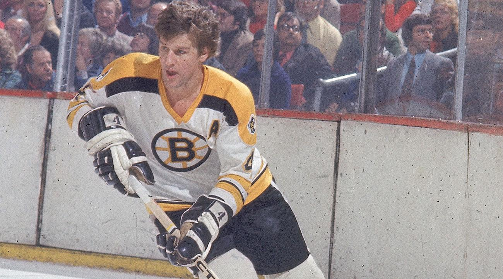
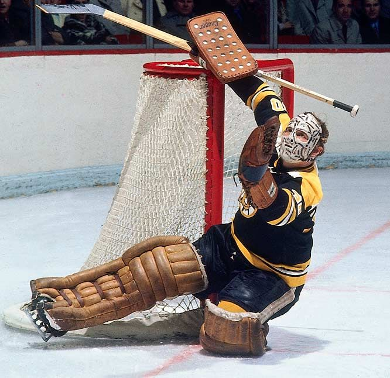
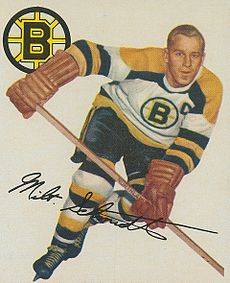

Robert Gordon Orr (born March 20, 1948)
Widely acknowledged as one of the greatest hockey players of all time. Orr used his ice skating speed, scoring, and play-making abilities to revolutionize the position of defenceman.
Gerald Michael "Cheesey" Cheevers (born 7 December 1940 in St. Catharines, Ontario)
goaltender in the National Hockey League and World Hockey Association between 1961 and 1980, most famous for his two stints with the Boston Bruins, where he backstopped the team to Stanley Cup wins in 1970 and 1972. He was inducted into the Hockey Hall of Fame in 1985
Milton Conrad "Milt" Schmidt (March 5, 1918 – January 4, 2017)
Hockey centre, coach and general manager, mostly for the Boston Bruins of the National Hockey League (NHL), where he was a member of the Kraut Line.